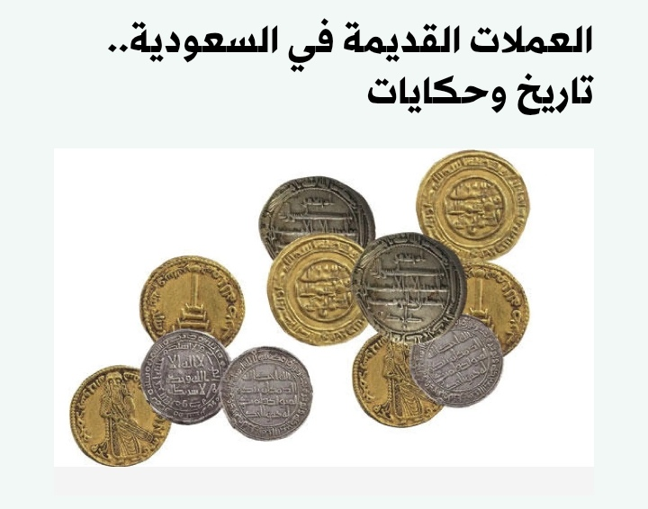
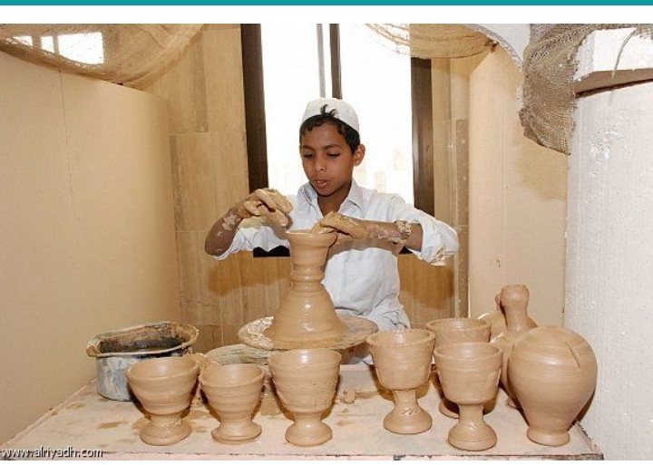
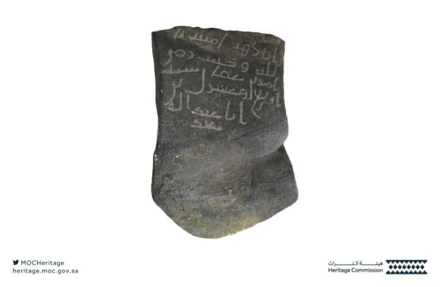

Heritage Media Gallery

Archaeological Coins
Coins from different periods of Arabian Peninsula history

Historical Pottery
Pottery pieces from various civilizations that lived in the region

Jarsh Islamic Inscription
Islamic inscriptions dating back to early Islamic periods